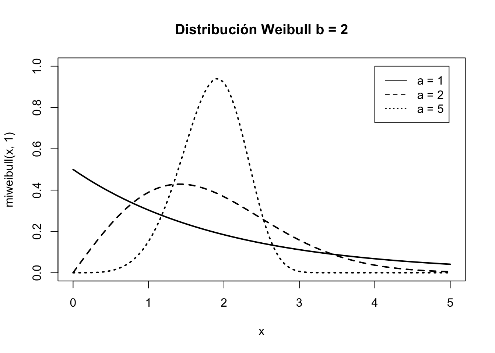

Apéndice E Ampliación
En este apéndice se incluyen temas avanzados que pueden ser útiles al lector más allá de un curso básico de estadística para ciencias o ingeniería, y que no se han incluido en el cuerpo de los capítulos para mantener el nivel de una asignatura de grado.
E.1 Función característica
E.2 Cambio de variable
E.3 Variables aleatorias unidimensionales mixtas
E.4 Variables aleatorias bidimensionales mixtas
E.5 Algunos modelos de distribución continuos más
E.5.1 Distribución Beta
La distribución Beta se utiliza en problemas de inferencia relativos a proporciones, especialmente en inferencia bayesiana.
\[X \sim \mathit{Be}(\alpha, \beta)\]
Función de densidad
\[f(x) = \begin{cases} \frac{\Gamma(\alpha + \beta)}{\Gamma(\alpha)\Gamma(\beta)}x^{\alpha-1}(1-x)^{\beta -1} & \text{si } 0 < x < 1\\ 0 & \text{resto } \end{cases}\]
En matemáticas, la función Gamma (\(\Gamma\)) es una integral indefinida que tiene entre otras las siguientes propiedades:
- $() = _0x{} e^{-x} dx, > 0 $
- \(\Gamma(\alpha + 1) = \alpha \Gamma(\alpha)\)
- \(n \in \mathbb{N}-\{0\} \implies \Gamma(n) = (n-1)!\)
- \(\Gamma(\frac{1}{2}) = \sqrt{\pi}\)
** Características**
- Esperanza: \(E[X] = \frac{\alpha}{\alpha + \beta}\)
- Varianza: \(\mathit{Var}[X] = \frac{\alpha\beta}{(\alpha + \beta)^2(\alpha + \beta+1)}\)
- Caso particular: \(\mathit{Be}(1,1) = U(0,1)\).
Ejemplo
\(X\): Proporción de clientes que contratarán el servicio
\(X\sim \mathit{Be}(1, 5)\)
Código
mibeta <- function(x) dbeta(x, 1, 5)
curve(mibeta, lwd = 2)
E.5.2 Distribución Gamma
La distribución Gamma se utiliza, entre otros, para modelizar tiempos de espera hasta que suceden \(\alpha\) eventos en un proceso de Poisson. De hecho, en inferencia bayesiana gamma es la distribución a priori de la distribución de Poisson.
\[X \sim \mathit{Ga}(a, b)\]
Función de densidad
\[f(x) = \begin{cases} \frac{b^a}{\Gamma(a)}x^{a-1}{e}^{-bx} & \text{si } 0 < x < \infty\\ 0 & \text{resto } \end{cases}\]
Características
- Esperanza: \(E[X] = \frac{a}{b}\)
- Varianza: \(\mathit{Var}[X] = \frac{a}{b^2}\)
- $() = _0x{} e^{-x} dx $
- La exponencial es un caso particular
Código
migamma <- function(x, a) dgamma(x, a, 2)
curve(migamma(x, 1), lwd = 2, xlim = c(0,10),
main = "Distribución Gamma b = 2")
curve(migamma(x, 2), lwd = 2, add = TRUE, lty = 2)
curve(migamma(x, 4), lwd = 2, add = TRUE, lty = 3)
legend(x = 6, y = 2, c("a = 1", "a = 2", "a = 4"), lty = 1:3)
E.5.3 Distribución de Weibull
La distribución Gamma presenta algunos inconventientes al modelizar tiempos de vida, y por eso algunas veces se prefiere la distribución de Weibull, que básicamente sirve para lo mismo. Véase para los detalles.
\[X \sim \mathit{We}(a, b) \]
Función de densidad \[f(x) = \begin{cases} \frac{a}{b}\left (\frac{x}{b} \right)^{a-1}e^{-(x/b)^a} & \text{si } x > 0\\ 0 & \text{resto } \end{cases}\]
Características
- Esperanza: \(E[X] =b \Gamma\left (1 + \frac{1}{a} \right )\)
- Varianza: \(\mathit{Var}[X] = b^2 \left ( \Gamma \left ( 1 + \frac{2}{a} \right ) - \left ( \Gamma \left (1 + \frac{2}{a} \right ) \right )^2 \right )\)
Código
miweibull <- function(x, a) dweibull(x, a, 2)
curve(miweibull(x, 1), lwd = 2, xlim = c(0,5),
ylim = c(0, 1),
main = "Distribución Weibull b = 2")
curve(miweibull(x, 2), lwd = 2, add = TRUE, lty = 2)
curve(miweibull(x, 5), lwd = 2, add = TRUE, lty = 3)
legend(x = 4, y = 1, c("a = 1", "a = 2", "a = 5"), lty = 1:3)
E.6 Modelos de distribución de probabilidad multivariantes
E.7 Modelos de distribución de probabilidad relacionadas con la normal
E.8 Simulación de variables aleatorias
\(U(0;\; 1)\): Generador de probabilidades aleatorias. Dada cualquier función de distribución \(F\), se pueden generar valores de esa VA obteniendo \(F^{-1}(U(0;\; 1))\)